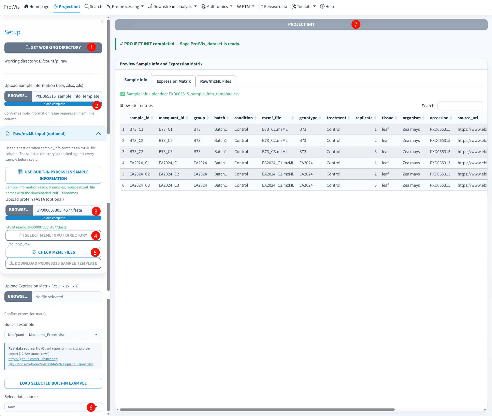

Project init
Purpose
Project init establishes the analysis context shared by all later modules. It defines the writable project directory, sample metadata, data source, and—when already available—the quantitative expression matrix. It then creates the first validated ProtVis_dataset and saves the initial project stage.
The current interface supports two distinct starting patterns:
- Tabular quantitative data: sample metadata + an expression matrix or a built-in source example.
- Raw/mzML + Sage: sample metadata + mzML directory + protein FASTA. In this route, Project init can create a valid Sage staging object before an expression matrix exists.
Common inputs
Sample information can be uploaded as .csv, .xlsx, or .xls. A practical table contains a unique sample identifier and the grouping variables required later in the analysis.
| Column | Purpose |
|---|---|
sample_id |
Unique sample name used by downstream matrices and plots |
maxquant_id |
Original source/export name used when sample columns must be mapped or renamed |
group |
Experimental group used for comparisons |
tissue |
Optional biological tissue; used by several demo and dimensionality-reduction workflows |
species or organism |
Optional biological source metadata |
batch |
Optional batch grouping |
condition |
Optional condition grouping |
mzml_file |
Required for the Raw/Sage route; exact mzML filename corresponding to the sample |
For an ordinary tabular project, the expression matrix should contain a protein identifier plus numeric sample columns. Sample columns must be unambiguously alignable to sample_info.
Supported source selections
The Project init source menu currently includes Raw, MaxQuant, ProteomeDiscoverer / Proteome Discoverer, DIA-NN, Spectronaut, FragPipe, Skyline, Mascot, OpenMS, and User-defined matrix. Raw is the current default selection.
Navigation is source-aware. The top-level Search tab is shown only for Raw. Pre-processing → MaxQuant Output Preparation is shown only for MaxQuant. The remaining preprocessing modules stay available across sources.
Standard tabular workflow
- Click Set working directory and choose a writable project directory.
- Upload Sample Information.
- Upload the Expression Matrix, or choose a Built-in example and click Load selected built-in example.
- Select the matching Data source.
- Confirm the Sample Info and Expression Matrix previews.
- Click Project init.
ProtVis validates sample/matrix alignment, creates ProtVis_dataset, performs an automatic portable export, and saves Step1_project_init.rda.
Raw/mzML + Sage workflow
Choose this route when the starting material is converted mass-spectrometry data in mzML format and you want ProtVis to run the Sage database search. The full-resolution screenshot below is the original PNG uploaded from the running application; the red labels show the required operating order.

Follow the numbered order in the figure
1. Set the working directory. Click Set working directory and choose a local directory in which ProtVis can create stage files, portable exports, the Sage_search directory and later analysis outputs. The illustrated project uses E:/count/p_raw. The directory must exist and be writable. Keeping one analysis inside a stable project directory makes checkpoint and Sage-result recovery much more reliable.
2. Load the sample information. Upload a .csv, .xlsx, or .xls table with at least sample_id and mzml_file, or click Use built-in PXD065315 sample information for the six-sample maize control example. Wait for Upload complete, then inspect the Sample Info preview. For the built-in example, the six rows are B73_C1, B73_C2, B73_C3, EA2024_C1, EA2024_C2, and EA2024_C3; the mzml_file field must point to the corresponding .mzML names.
3. Upload the protein FASTA. Under Raw/mzML input, upload the protein database used for Sage. Accepted inputs include .fa, .fasta, .faa, and supported compressed FASTA forms. Use a FASTA that matches the organism and protein identifiers expected for the experiment. In the illustrated maize example, UP000007305_4577.fasta is registered. Do not continue until the interface reports FASTA ready.
4. Select the mzML input directory. Click Select mzML input directory and choose the folder containing the converted mzML files. The folder may also contain the original vendor .raw files, but the check is performed against the .mzML filenames registered in sample_info. For PXD065315, the expected converted files are B73_C1.mzML, B73_C2.mzML, B73_C3.mzML, EA2024_C1.mzML, EA2024_C2.mzML, and EA2024_C3.mzML.
5. Check the mzML files. Click Check mzML files. ProtVis verifies that filenames are unique, have the .mzML extension and exist in the selected directory. Resolve every Missing or Invalid extension row before initializing the project. If a check fails, compare the physical filename with sample_info$mzml_file character by character.
6. Select Raw as the data source. In Select data source, choose Raw. This activates the Raw/Sage route and exposes the top-level Search tab. Do not upload a fabricated expression matrix merely to satisfy Project init; the expression layer is deliberately absent until Sage produces LFQ results.
7. Run Project init. Click the large Project init button. A successful Raw initialization reports “PROJECT INIT completed — Sage ProtVis_dataset is ready.” Inspect the preview tabs after completion. Sample Info should contain the expected rows, Raw/mzML Files should reflect the registered files, and Expression Matrix can remain empty at this stage. The next step is Search, not Correct Noise.
When an uploaded sample table contains an mzML filename column (mzml_file, mzml, raw_file, file, or filename), ProtVis automatically registers it for the Sage workflow.
A Raw/Sage project does not need a protein expression matrix before Search. Project init creates a Sage_staging project object and fills the expression layer only after LFQ results are available. After Step 7 succeeds, continue directly to Raw/mzML + Sage search.
The Sage staging object
If no expression matrix exists yet, Project init creates a staging ProtVis_dataset with sample metadata and registered input paths. Its workflow stage is Sage_staging, with an object name such as:
ProtVis_dataset__project_init__Sage_staging__v1This is intentional. ProtVis does not fabricate protein abundances before the database search. The staging object is valid even though its expression layer is temporarily empty. Step1_project_init.rda and the portable export are still written, so the project has a recoverable starting state.
Built-in PXD065315 sample information
The current built-in Raw example contains six maize control samples: three B73 replicates (B73_C1, B73_C2, B73_C3) and three EA2024 replicates (EA2024_C1, EA2024_C2, EA2024_C3). Its columns include sample_id, mzml_file, genotype, treatment, group, condition, replicate, batch, tissue, organism, accession, and the PRIDE source URL.
Public source data:
- PXD065315 on PRIDE
- PXD065315 on ProteomeXchange
- Direct links for the six control RAW files and their expected mzML filenames
The built-in mzml_file values refer to locally converted files such as B73_C1.mzML and EA2024_C3.mzML. PRIDE provides the corresponding vendor .raw files; convert them to mzML before selecting the Raw/mzML directory in ProtVis.
Outputs
For a standard quantitative project, the primary output is a validated ProtVis_dataset with a traceable name such as:
ProtVis_dataset__project_init__maxquant__v1For either starting route, ProtVis writes:
Step1_project_init.rdaThe stage file contains one ProtVis_dataset, rather than separate unrelated workspace variables.
For Raw/Sage, check mzML files and FASTA registration first. For a tabular project, inspect the sample and expression previews. This catches filename, sample-order and working-directory problems before downstream steps begin.
Common validation problems
Raw project creates no expression preview. This is expected before Sage Search. The staging object intentionally has no protein abundance matrix.
mzML check reports Missing. The mzml_file values must match the files in the selected directory. The check is case-aware at the filesystem level and also rejects non-mzML extensions or duplicate names.
Sample names do not match a tabular matrix. Check sample_id, maxquant_id, and expression-matrix column names. Do not silently reorder samples outside ProtVis without recording the change.
Working directory cannot be selected. Choose a local directory you can write to. ProtVis normalizes selected paths and rejects inaccessible locations instead of continuing with an invalid project directory.